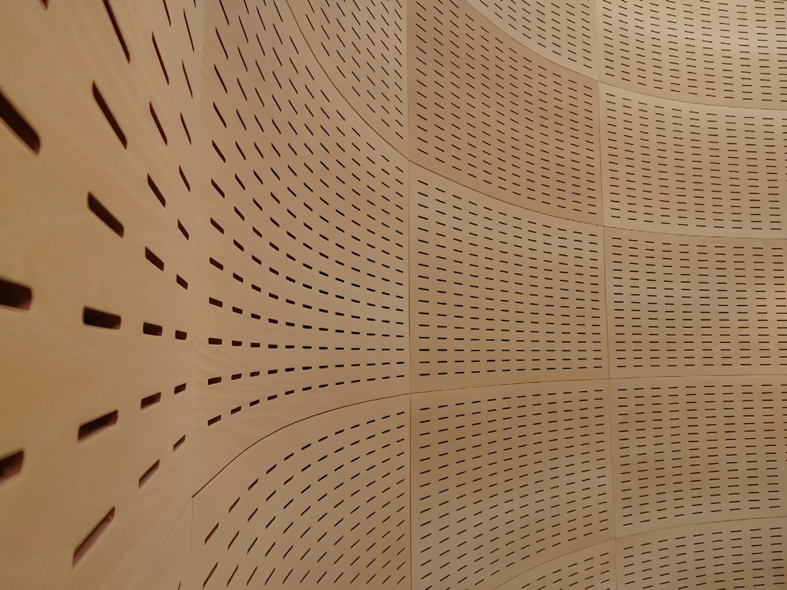
Collection
Twenty series across five material families — engineered, lab-measured and made in our own factory. One catalogue for every acoustic challenge, from concert halls to clean rooms.
Sixteen product lines. Filter by material family.
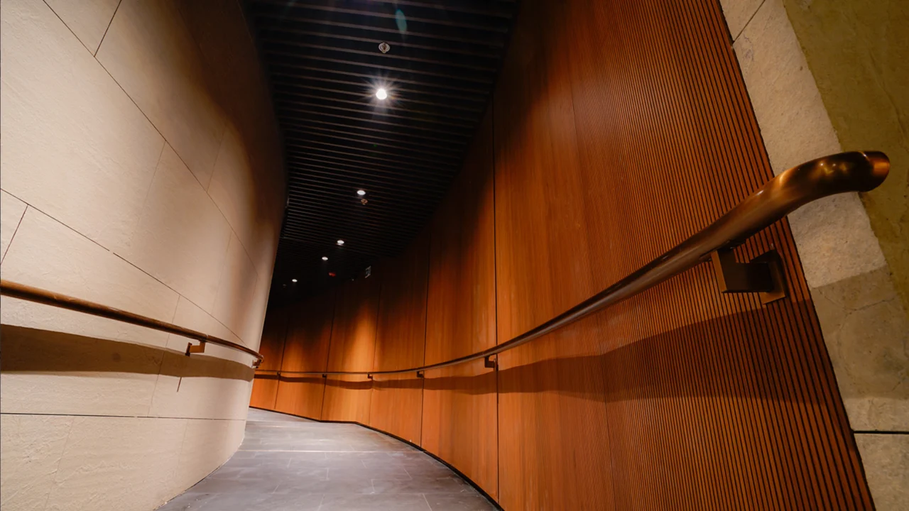
Classic
Grooved panels on an MDF/MGO base with melamine, HPL or veneer finish — the fundamental absorbing surface.
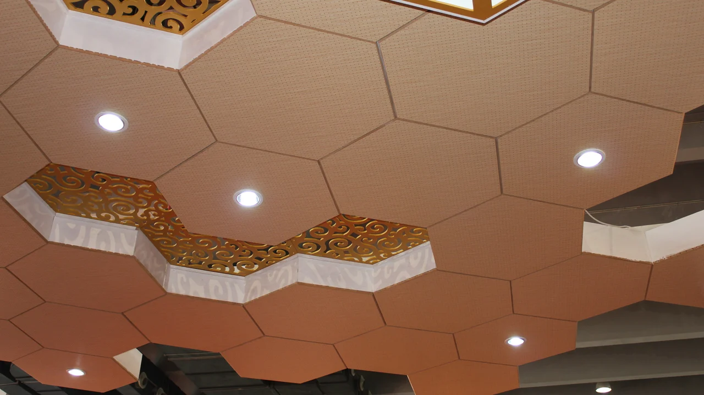
Perfo
Double-sided perforated panels in six open-area patterns, tuned for mid-to-low frequency absorption.
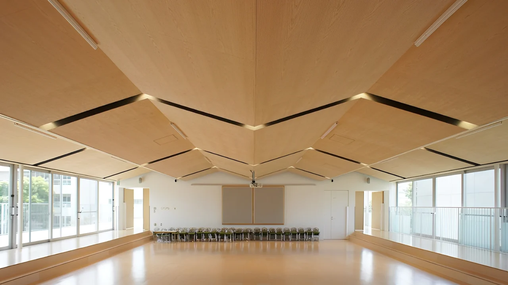
Micro
0.5–1 mm micro-perforations form a Helmholtz resonator — near-invisible control. Micro Classic · Micro Art.
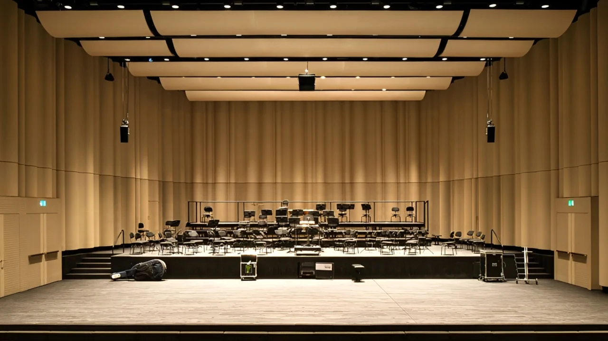
Wood Curve
Kerf-cut MDF that bends into seamless waves, columns and organic forms, down to a 1,000 mm radius.
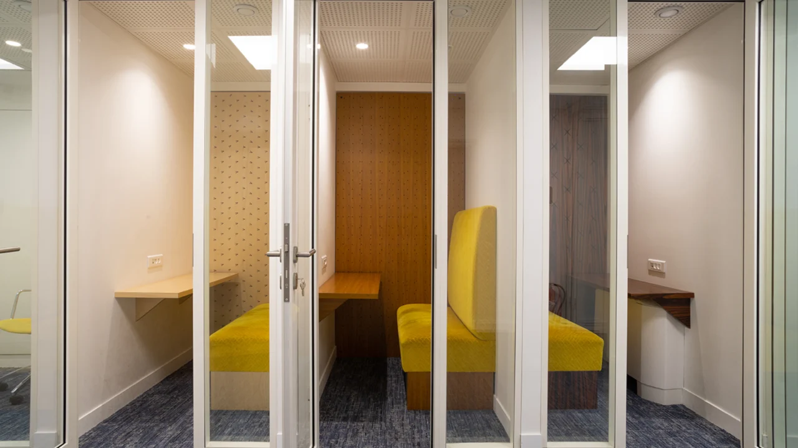
Art Acoustic
CNC-carved artistic patterns that absorb mid-to-high reverberation while serving as sculptural focal points.
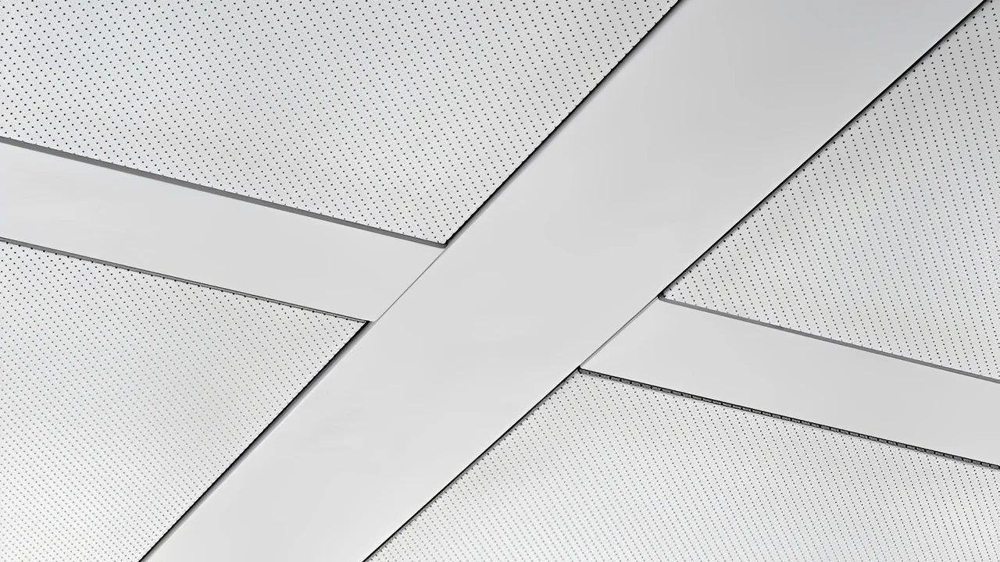
Phonex Metal
Perforated aluminium on a honeycomb core — fire-resistant and moisture-proof. Compose · Classic · Standard.
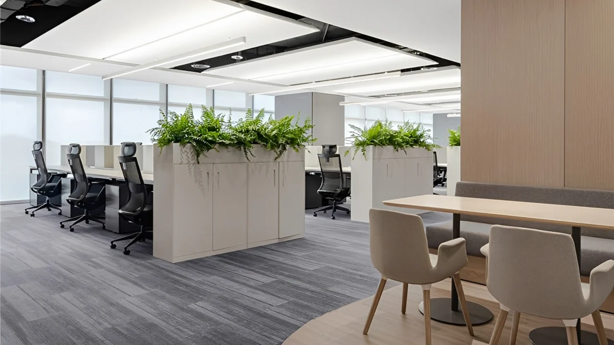
Uniseam
A truly monolithic, joint-free ceiling — trowel-applied over reinforced scrim. Aero · Mono.
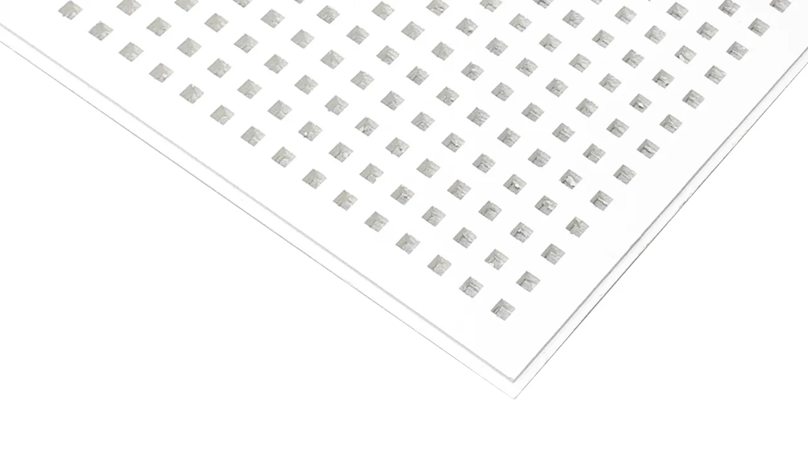
Cleaneo
High-performance perforated gypsum for monolithic ceiling and wall systems, finely tunable absorption.
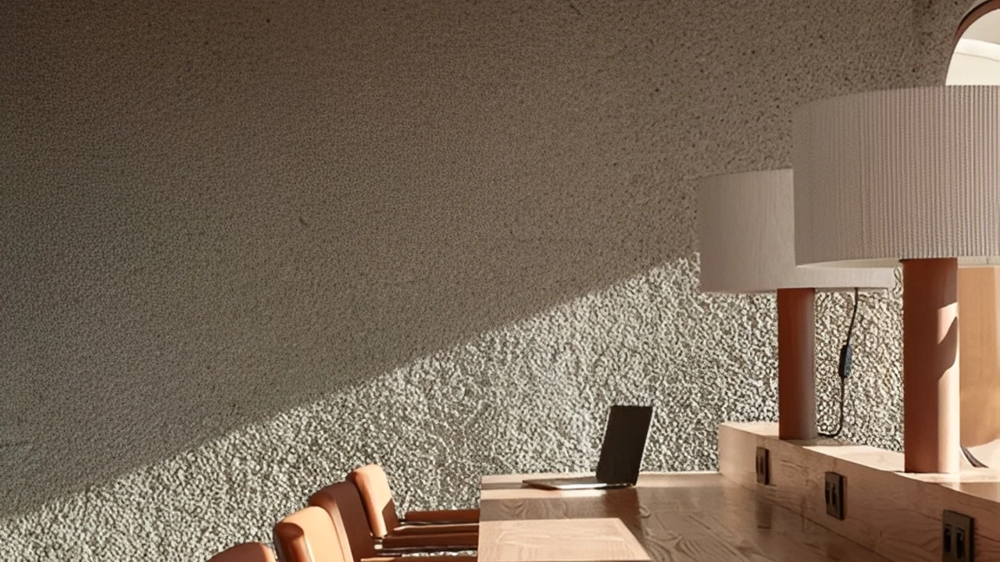
Acouspray
Spray-applied cellulose that cures into a seamless, low-density acoustic envelope on any substrate.
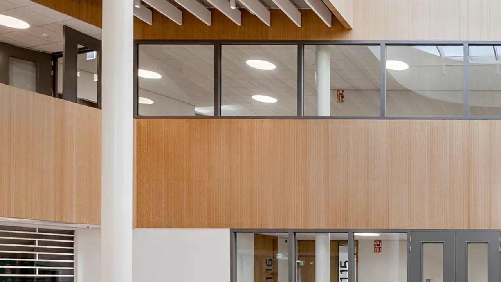
Acona Classic
High-density fibreglass lay-in tiles with a decorative face — non-combustible and formaldehyde-free.
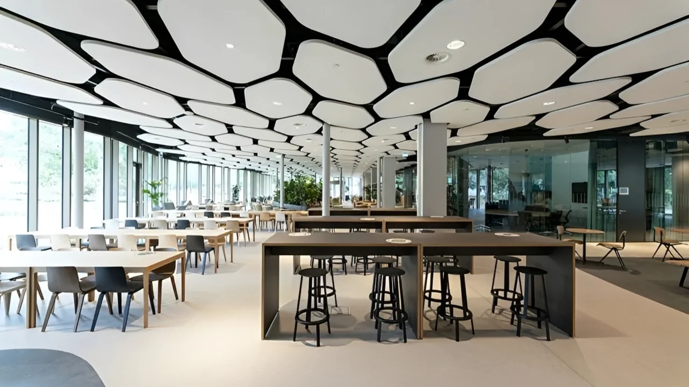
Acona Art
Sculptural moulded-fibreglass clouds, baffles and pyramids for three-dimensional acoustic control.
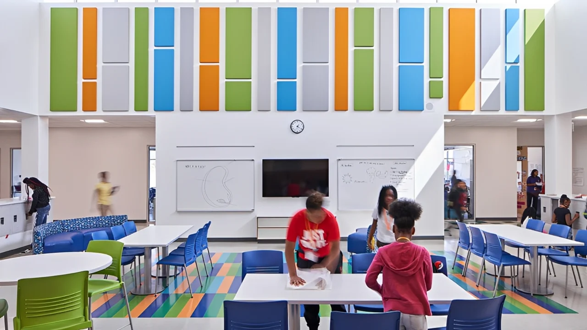
Fabricoustic
Fabric-wrapped panels over glass-fibre (Classic) or recycled cotton (Eco), in Class-A acoustic fabric.
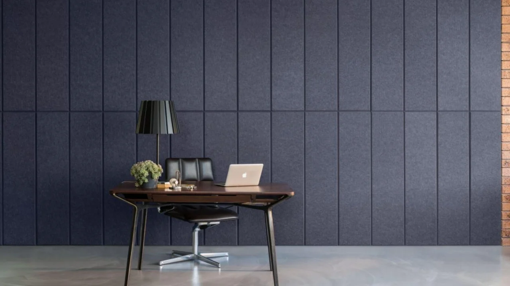
Polyester (PET)
100% recyclable polyester fibre — flat panels, V-groove walls, engraving ceilings and folded clouds.
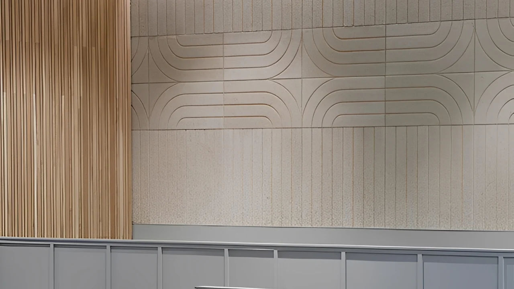
Wood Wool
Mineralised wood wool bound with cement — impact-resistant, fire-safe, moisture-proof and insulating.
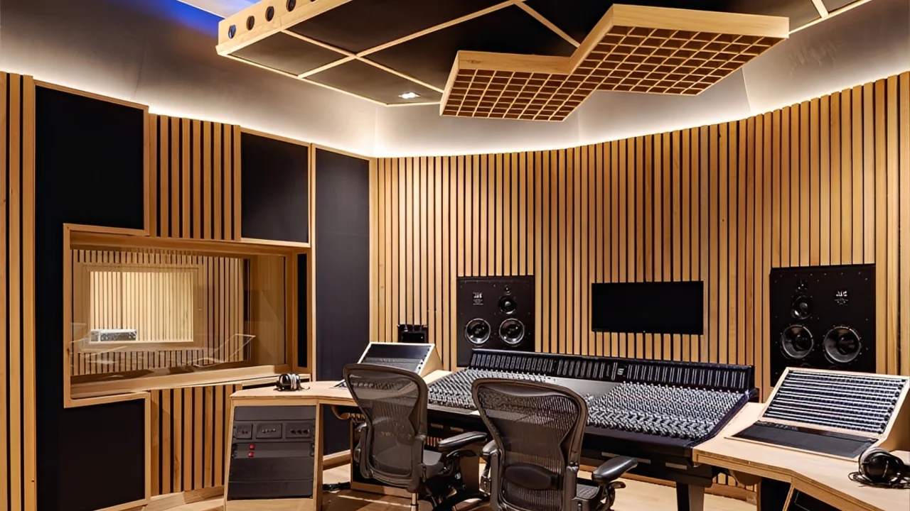
Diffuser
MLS, QRD, Skyline and geometric diffusers in solid wood or MDF — scattering measured to ISO 17497.
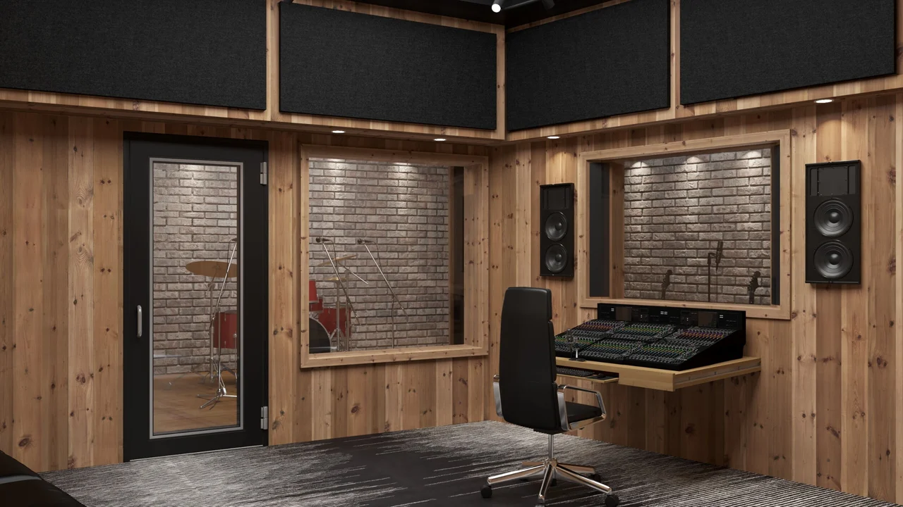
Soundproofed Door
Metal-wood composite, metal or solid-wood doorsets, tested to ISO 10140 for studios and halls.
Start from the problem, not the product.
Control reverberation
Bring speech clarity and music balance to halls, offices and public rooms.
Invisible acoustics
Monolithic surfaces where the treatment should not read as a product.
Demanding environments
Impact, humidity, hygiene and fire — airports, labs, kitchens, schools.
Sculpture & diffusion
Acoustic performance as a visual statement, or precise scattering control.
One palette across the wood-based collection.
White Oak to Dark Walnut — durable resin surfaces for high-traffic interiors.
Elegant Oak to Afromosia — high-pressure laminate for the hardest wear.
Washed White Oak to European Ebony — natural wood, sequence-matched.
Twelve standard coats, or any RAL and Pantone colour on request.
Every series ships with its lab report.
Not sure which system fits your room?